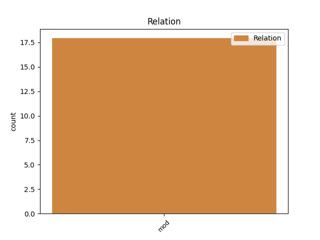
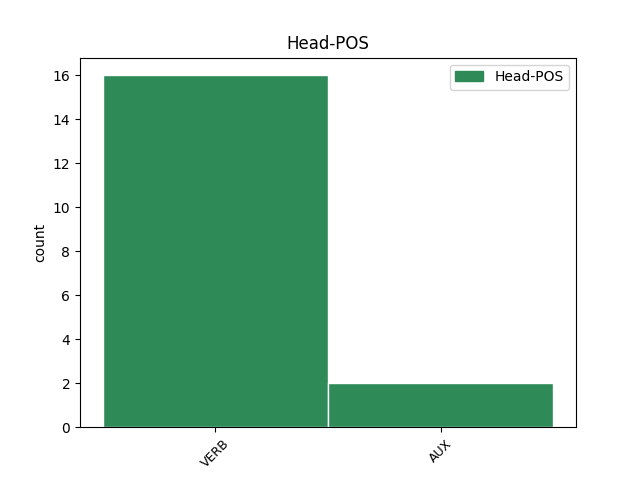
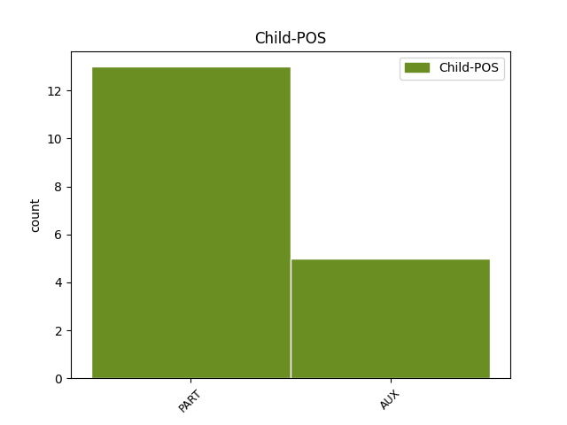

Distribution of features within this leaf



Agreement Rules sorted by frequency.
- When the dependent token is the modifer(mod) of the head token, and the head token is VERB and the dependent token is PART.
1 Níor níor PART Vb PartType=Vb|Tense=Past 2 mod _ _
2 tharla tarlaigh VERB VTI Form=Len|Mood=Ind|Tense=Past 0 _ _ _
3 aon _ _ _ _ 0 _ _ _
4 cheo _ _ _ _ 0 _ _ _
5 de _ _ _ _ 0 _ _ _
6 rath _ _ _ _ 0 _ _ _
7 . _ _ _ _ 0 _ _ _
1 Rud _ _ _ _ 0 _ _ _
2 a _ _ _ _ 0 _ _ _
3 mheabhraíonn _ _ _ _ 0 _ _ _
4 rud _ _ _ _ 0 _ _ _
5 eile _ _ _ _ 0 _ _ _
6 dom _ _ _ _ 0 _ _ _
7 , _ _ _ _ 0 _ _ _
8 mura _ _ _ _ 0 _ _ _
9 bhfuil _ _ _ _ 0 _ _ _
10 maithiúnas _ _ _ _ 0 _ _ _
11 faighte _ _ _ _ 0 _ _ _
12 fós _ _ _ _ 0 _ _ _
13 a'm _ _ _ _ 0 _ _ _
14 uait _ _ _ _ 0 _ _ _
15 , _ _ _ _ 0 _ _ _
16 agus _ _ _ _ 0 _ _ _
17 sa _ _ _ _ 0 _ _ _
18 gcás _ _ _ _ 0 _ _ _
19 sin _ _ _ _ 0 _ _ _
20 ba _ _ _ _ 0 _ _ _
21 chóir _ _ _ _ 0 _ _ _
22 dúinn _ _ _ _ 0 _ _ _
23 dearmad _ _ _ _ 0 _ _ _
24 a _ _ _ _ 0 _ _ _
25 dhéanamh _ _ _ _ 0 _ _ _
26 air _ _ _ _ 0 _ _ _
27 , _ _ _ _ 0 _ _ _
28 agus _ _ _ _ 0 _ _ _
29 scaradh _ _ _ _ 0 _ _ _
30 lena _ _ _ _ 0 _ _ _
31 chéile _ _ _ _ 0 _ _ _
32 mar _ _ _ _ 0 _ _ _
33 chompánaigh _ _ _ _ 0 _ _ _
34 , _ _ _ _ 0 _ _ _
35 ach _ _ _ _ 0 _ _ _
36 má _ _ _ _ 0 _ _ _
37 tá bí VERB PresInd Mood=Ind|Tense=Pres 0 _ _ _
38 maithiúnas _ _ _ _ 0 _ _ _
39 tugtha _ _ _ _ 0 _ _ _
40 a' _ _ _ _ 0 _ _ _
41 d _ _ _ _ 0 _ _ _
42 dom _ _ _ _ 0 _ _ _
43 is is AUX Cop Tense=Pres|VerbForm=Cop 37 mod _ _
44 féidir _ _ _ _ 0 _ _ _
45 liom _ _ _ _ 0 _ _ _
46 leanacht _ _ _ _ 0 _ _ _
47 ar _ _ _ _ 0 _ _ _
48 aghaidh _ _ _ _ 0 _ _ _
49 agus _ _ _ _ 0 _ _ _
50 a _ _ _ _ 0 _ _ _
51 admháil _ _ _ _ 0 _ _ _
52 gur _ _ _ _ 0 _ _ _
53 inis _ _ _ _ 0 _ _ _
54 mé _ _ _ _ 0 _ _ _
55 bréag _ _ _ _ 0 _ _ _
56 duit _ _ _ _ 0 _ _ _
57 roimhe _ _ _ _ 0 _ _ _
58 seo _ _ _ _ 0 _ _ _
59 nuair _ _ _ _ 0 _ _ _
60 a _ _ _ _ 0 _ _ _
61 dúirt _ _ _ _ 0 _ _ _
62 mé _ _ _ _ 0 _ _ _
63 nach _ _ _ _ 0 _ _ _
64 raibh _ _ _ _ 0 _ _ _
65 aon _ _ _ _ 0 _ _ _
66 news _ _ _ _ 0 _ _ _
67 a'm _ _ _ _ 0 _ _ _
68 mar _ _ _ _ 0 _ _ _
69 go _ _ _ _ 0 _ _ _
70 bhfuil _ _ _ _ 0 _ _ _
71 . _ _ _ _ 0 _ _ _
1 ( _ _ _ _ 0 _ _ _
2 Leanann _ _ _ _ 0 _ _ _
3 sé _ _ _ _ 0 _ _ _
4 ar _ _ _ _ 0 _ _ _
5 aghaidh _ _ _ _ 0 _ _ _
6 ag _ _ _ _ 0 _ _ _
7 rá _ _ _ _ 0 _ _ _
8 gur is AUX Cop Tense=Pres|VerbForm=Cop 0 _ _ _
9 ceadmhach _ _ _ _ 0 _ _ _
10 taibléidí _ _ _ _ 0 _ _ _
11 a _ _ _ _ 0 _ _ _
12 mhúchann _ _ _ _ 0 _ _ _
13 an _ _ _ _ 0 _ _ _
14 phian _ _ _ _ 0 _ _ _
15 a _ _ _ _ 0 _ _ _
16 úsáid _ _ _ _ 0 _ _ _
17 fiú _ _ _ _ 0 _ _ _
18 má _ _ _ _ 0 _ _ _
19 bhíonn _ _ _ _ 0 _ _ _
20 seans _ _ _ _ 0 _ _ _
21 go _ _ _ _ 0 _ _ _
22 dtabharfadh _ _ _ _ 0 _ _ _
23 sin _ _ _ _ 0 _ _ _
24 an _ _ _ _ 0 _ _ _
25 bás _ _ _ _ 0 _ _ _
26 níos _ _ _ _ 0 _ _ _
27 giorra _ _ _ _ 0 _ _ _
28 , _ _ _ _ 0 _ _ _
29 ach _ _ _ _ 0 _ _ _
30 nach is AUX Cop Polarity=Neg|PronType=Rel|Tense=Pres|VerbForm=Cop 8 mod _ _
31 ceadmhach _ _ _ _ 0 _ _ _
32 iad _ _ _ _ 0 _ _ _
33 a _ _ _ _ 0 _ _ _
34 úsáid _ _ _ _ 0 _ _ _
35 d' _ _ _ _ 0 _ _ _
36 aon _ _ _ _ 0 _ _ _
37 turas _ _ _ _ 0 _ _ _
38 le _ _ _ _ 0 _ _ _
39 bás _ _ _ _ 0 _ _ _
40 a _ _ _ _ 0 _ _ _
41 thabhairt _ _ _ _ 0 _ _ _
42 . _ _ _ _ 0 _ _ _
No disagree examples found.